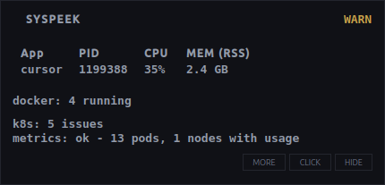

Focused application
PID, CPU percent and resident memory of the window you are using, plus threads, open files and context switches. Refreshed every second.
Linux, macOS, Windows. C++20 with Qt 6.
Pick any window and Syspeek shows that app's CPU, memory, threads and file descriptors live, in a small panel that floats over your desktop.

What it shows
PID, CPU percent and resident memory of the window you are using, plus threads, open files and context switches. Refreshed every second.
Container count at a glance, with unhealthy, restarting and recently exited containers flagged.
Problem pods and deployments short on ready replicas, from your current kubectl context.
Real focus tracking on GNOME, KDE, Hyprland, Sway, niri and plain X11. Native collectors on macOS and Windows. Anything an OS cannot provide is labelled not supported on this OS.
Get started
$ curl -fsSL https://raw.githubusercontent.com/codeafridi/Syspeek/main/install.sh | sh
Installs for your user only, puts syspeek on PATH and starts it at login. Runs on Ubuntu, Debian, Fedora, Arch, openSUSE, Alpine and other 64 bit distros with glibc 2.34 or newer. No curl? The README has a wget version.
Prefer a package file? Download the .deb or the AppImage from Releases.
$ curl -fsSL https://raw.githubusercontent.com/codeafridi/Syspeek/main/install.sh | sh
Downloads the latest DMG, copies the app into Applications and turns on login autostart. Needs macOS 12 Monterey or newer. No permissions asked, and the installer clears Gatekeeper for you.
Prefer a package file? Download the DMG from Releases.
PS> irm https://raw.githubusercontent.com/codeafridi/Syspeek/main/cpp/packaging/windows/install.ps1 | iex
Open PowerShell, paste the line, done. Installs into your user folder, puts syspeek on PATH and starts it at login. Needs Windows 10 or newer. No Git Bash required.
Prefer a setup wizard? Download the MSI from Releases. SmartScreen may ask once, choose Run anyway.
After install: syspeek to run it, syspeek status to check it, syspeek stop to quit it, syspeek update to upgrade.